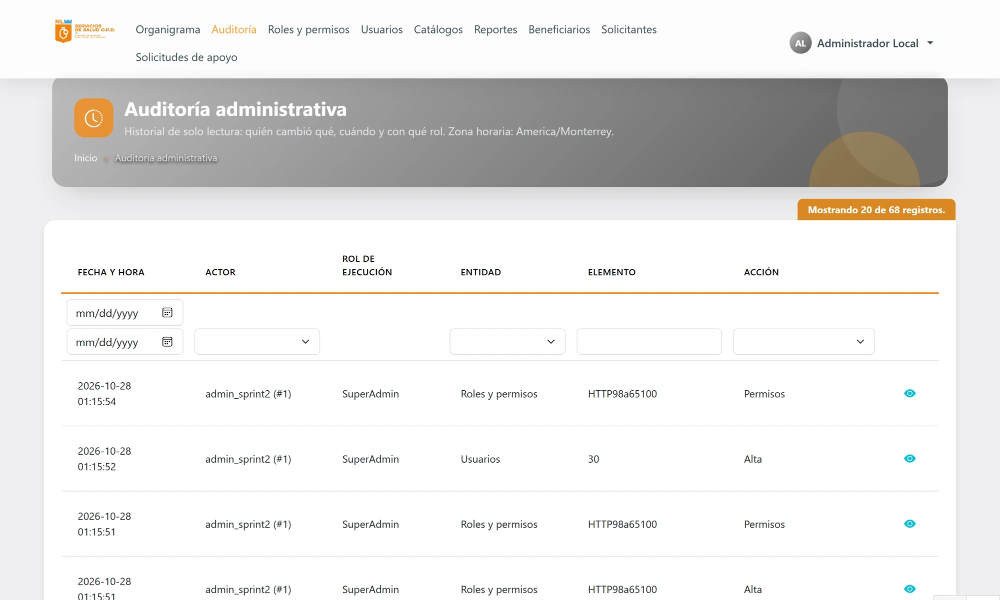
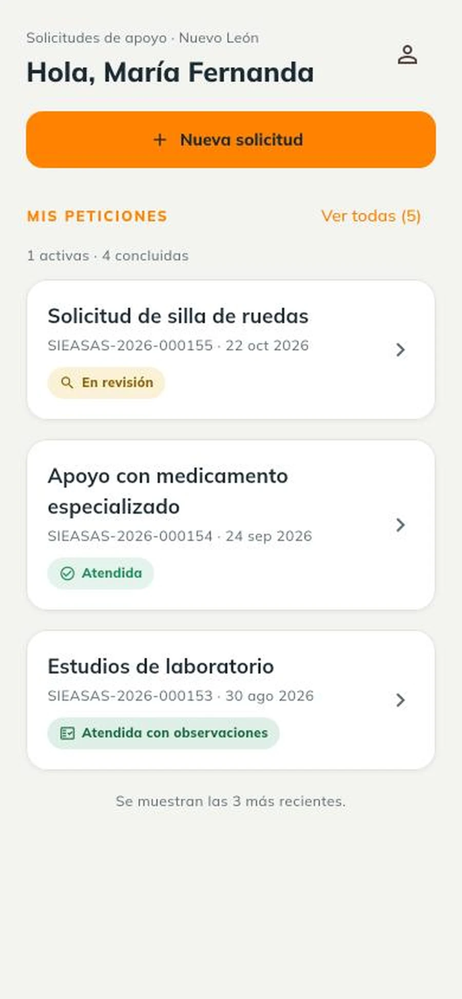
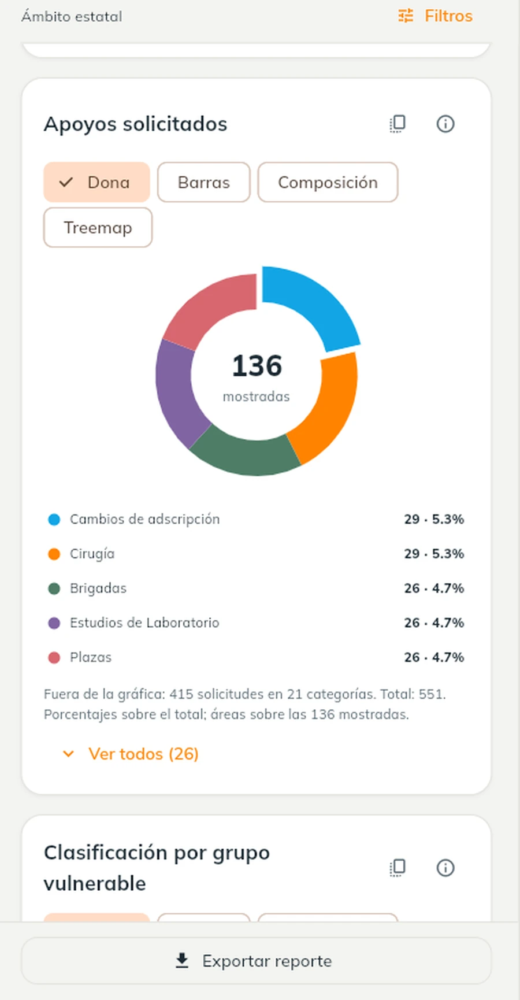
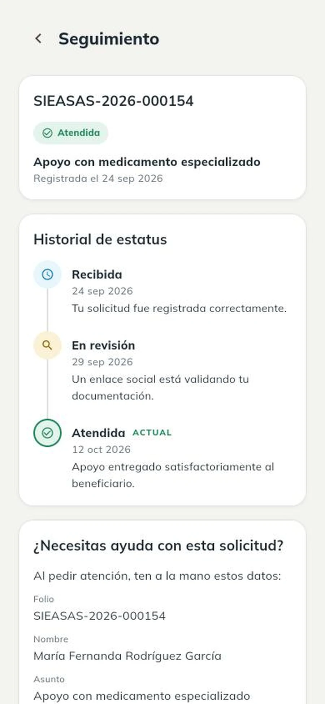
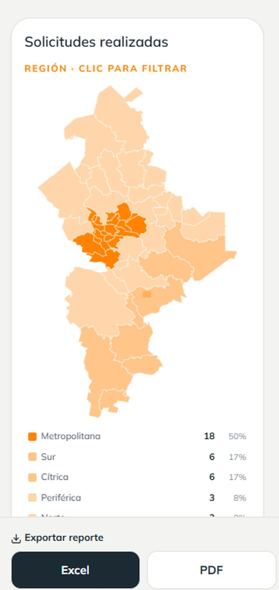
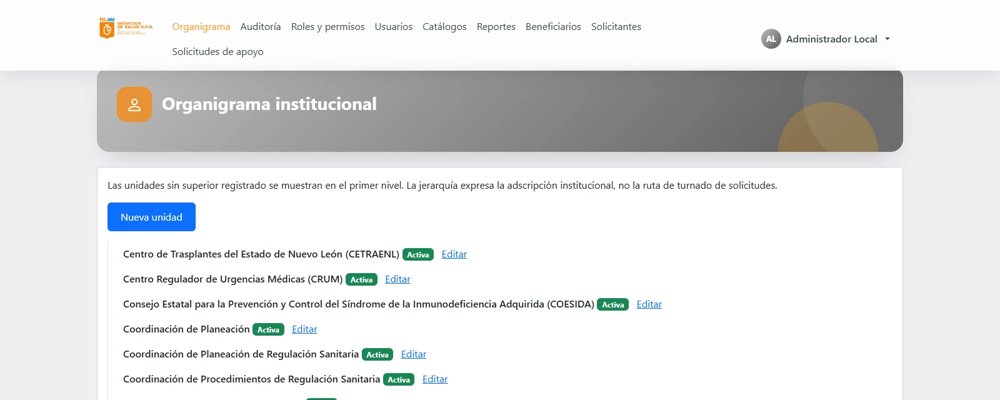

<title>SIEASAS</title>
<meta name="viewport" content="width=device-width, initial-scale=1, viewport-fit=cover">
<meta name="claude:viewport-fit-sides" content="cover">
<meta name="description" content="SIEASAS: la plataforma que conecta a la ciudadanía, a la Secretaría de Salud de Nuevo León y a su equipo de TI. De la solicitud a la solución.">
<link rel="preconnect" href="https://fonts.googleapis.com">
<link rel="preconnect" href="https://fonts.gstatic.com" crossorigin>
<link rel="stylesheet" href="https://fonts.googleapis.com/css2?family=Mulish:wght@400;600;700;800;900&display=swap">
<style>
/* Layout: portada con los tres productos reales en pantalla; luego un capítulo por producto (texto + capturas alternados), cómo se conectan, ficha técnica comparativa y créditos. Solo scroll, sin botones. */
:root {
  --bg: #FFFFFF;
  --soft: #F3F3F0;
  --fg: #1B2A33;
  --muted: #5B6B74;
  --line: #E3E3DE;
  --salud: #12A5E5;
  --salud-text: #0B7DB0;
  --brand: #FF8300;
  --brand-text: #B85A00;
  --frame: #1B2A33;
  --dark: #1B2A33;
  --on-dark: #FFFFFF;
  --on-dark-muted: #A9B6BE;
  --font: "Mulish", "Segoe UI", system-ui, sans-serif;
}
@media (prefers-color-scheme: dark) {
  :root:not([data-theme="light"]) {
    --bg: #10181D; --soft: #172229; --fg: #EAF0F3; --muted: #9AAAB3; --line: #26363F;
    --salud-text: #4CC0F0; --brand-text: #FFA54D; --frame: #000000; --dark: #0A1115; color-scheme: dark;
  }
}
:root[data-theme="dark"] {
  --bg: #10181D; --soft: #172229; --fg: #EAF0F3; --muted: #9AAAB3; --line: #26363F;
  --salud-text: #4CC0F0; --brand-text: #FFA54D; --frame: #000000; --dark: #0A1115; color-scheme: dark;
}

* { box-sizing: border-box; }
body { background: var(--bg); color: var(--fg); font-family: var(--font); font-size: 17px; line-height: 1.55; }
h1, h2, h3, p { margin: 0; }
h1, h2 { font-weight: 900; letter-spacing: -.035em; line-height: 1.04; text-wrap: balance; }
img { display: block; max-width: 100%; height: auto; }
.wrap { max-width: 1160px; margin: 0 auto; padding-left: max(20px, env(safe-area-inset-left, 0px)); padding-right: max(20px, env(safe-area-inset-right, 0px)); }

/* Marcos de dispositivo */
/* Teléfono: cuerpo de aluminio oscuro, bisel delgado, isla de cámara y botones laterales */
.phone { --r: 15%; position: relative; padding: 2.6%; border-radius: 13% / 6.2%; max-width: 100%;
  background: linear-gradient(145deg, #3B4248 0%, #15191C 38%, #0B0D0F 62%, #2C3136 100%);
  box-shadow: inset 0 0 0 1px rgba(255,255,255,.14), inset 0 0 0 3px #050607, 0 2px 4px rgba(0,0,0,.2), 0 40px 70px -30px rgba(15,25,32,.55), 0 18px 30px -18px rgba(15,25,32,.35); }
.phone .screen { position: relative; border-radius: 11% / 5.2%; overflow: hidden; aspect-ratio: 9 / 19.5; background: #F7F7F4; display: flex; flex-direction: column; padding-top: 13%; container-type: inline-size; }
.phone img { width: 100%; flex: 1; min-height: 0; object-fit: cover; object-position: top; }
.phone .screen::before { content: "9:41"; position: absolute; top: 4.2cqw; left: 11cqw; font: 800 4.4cqw/1 var(--font); color: #1B2A33; letter-spacing: -.02em; }
.phone .screen::after { content: ""; position: absolute; top: 1.6%; left: 50%; width: 31%; height: 3.6%; transform: translateX(-50%); background: #050607; border-radius: 999px; }
.phone::before, .phone::after { content: ""; position: absolute; width: 1.6%; border-radius: 2px; background: linear-gradient(90deg, #2A2F33, #4A5157); }
.phone::before { right: -1.2%; top: 24%; height: 10%; }
.phone::after { left: -1.2%; top: 21%; height: 12%; }
/* Par de teléfonos: uno al frente y otro detrás, ligeramente girado */
.duo { position: relative; display: grid; grid-template-columns: 1fr; justify-items: center; padding: 4% 0 6%; }
.duo .phone { grid-area: 1 / 1; width: 58%; max-width: 300px; }
.duo .back { transform: translateX(34%) translateY(-4%) rotate(5deg) scale(.92); filter: saturate(.95); }
.duo .front { transform: translateX(-22%) rotate(-2deg); z-index: 1; }
.duo::before { content: ""; position: absolute; inset: 14% 6% 0; border-radius: 40px; background: var(--glow); z-index: -1; }
.c .duo { --glow: radial-gradient(60% 55% at 50% 55%, rgba(18,165,229,.18), transparent 70%); }
.e .duo { --glow: radial-gradient(60% 55% at 50% 55%, rgba(255,131,0,.16), transparent 70%); }
.browser { border: 1px solid var(--line); border-radius: 12px; overflow: hidden; background: #fff; box-shadow: 0 24px 48px -28px rgba(27,42,51,.4); }
.browser::before { content: ""; display: block; height: 22px; background-color: var(--soft); border-bottom: 1px solid var(--line); background-image: radial-gradient(circle, #CFCFC8 4px, transparent 4.5px), radial-gradient(circle, #CFCFC8 4px, transparent 4.5px), radial-gradient(circle, #CFCFC8 4px, transparent 4.5px); background-size: 14px 22px; background-repeat: no-repeat; background-position: 10px 0, 26px 0, 42px 0; }

/* Encabezado */
.top { display: flex; align-items: center; justify-content: space-between; gap: 16px; padding-block: 22px; }
.logo { display: flex; align-items: center; gap: 10px; color: var(--fg); }
.logo svg { width: 56px; height: auto; }
.logo span { font-weight: 900; font-size: 28px; letter-spacing: -.04em; }
.top small { color: var(--muted); font-size: 14px; font-weight: 700; text-align: right; }

/* Portada */
.hero { padding-block: 36px 0; }
.hero h1 { font-size: clamp(46px, 8vw, 104px); max-width: 11ch; }
.hero h1 .s { color: var(--salud); }
.hero h1 .b { color: var(--brand); }
.hero .sub { font-size: clamp(19px, 2vw, 23px); color: var(--muted); max-width: 32em; margin-top: 24px; }
.hero .sub b { color: var(--fg); }
.stage { position: relative; margin-top: 56px; display: grid; grid-template-columns: 1fr 2.4fr 1fr; align-items: end; gap: 0; }
.stage .browser { grid-column: 1 / -1; grid-row: 1; margin: 0 9% 12%; }
.stage .phone { grid-row: 1; width: 100%; max-width: 250px; position: relative; }
.stage .p1 { grid-column: 1; justify-self: start; transform: translateY(8%) rotate(-3deg); }
.stage .p2 { grid-column: 3; justify-self: end; transform: translateY(8%) rotate(3deg); }
.stage figcaption { display: none; }

/* Cifras */
.facts { background: var(--dark); color: var(--on-dark); margin-top: -40px; padding-top: 88px; }
.facts .wrap { display: grid; grid-template-columns: repeat(4, 1fr); padding-block: 0 56px; }
.fact { padding: 4px 24px; border-left: 1px solid #FFFFFF22; min-width: 0; }
.fact:first-child { border-left: 0; padding-left: 0; }
.fact b { display: block; font-size: clamp(34px, 4vw, 52px); font-weight: 900; letter-spacing: -.04em; line-height: 1; font-variant-numeric: tabular-nums; }
.fact:nth-child(odd) b { color: var(--brand); }
.fact:nth-child(even) b { color: var(--salud); }
.fact span { display: block; color: var(--on-dark-muted); font-size: 15px; margin-top: 10px; }

/* Introducción a productos */
.intro { padding-block: 104px 24px; }
.intro h2 { font-size: clamp(36px, 5vw, 60px); max-width: 15ch; }
.intro p { color: var(--muted); font-size: 20px; max-width: 34em; margin-top: 18px; }

/* Capítulo de producto */
.product { padding-block: 72px; display: grid; grid-template-columns: 1fr 1.15fr; gap: 64px; align-items: center; }
.product > * { min-width: 0; }
.product.flip .copy { order: 2; }
.who { font-size: 15px; font-weight: 800; letter-spacing: .1em; text-transform: uppercase; }
.c .who { color: var(--salud-text); } .e .who { color: var(--brand-text); } .a .who { color: var(--muted); }
.product h3 { font-size: clamp(32px, 3.6vw, 46px); font-weight: 900; letter-spacing: -.03em; line-height: 1.05; margin-top: 10px; }
.product .promise { font-size: 21px; margin-top: 14px; font-weight: 600; }
.product ul { list-style: none; padding: 0; margin: 28px 0 0; display: grid; gap: 14px; }
.product li { padding-left: 22px; position: relative; color: var(--muted); }
.product li::before { content: ""; position: absolute; left: 0; top: .62em; width: 10px; height: 3px; border-radius: 2px; }
.c li::before { background: var(--salud); } .e li::before { background: var(--brand); } .a li::before { background: var(--fg); }
.product li b { color: var(--fg); }
.shots { display: flex; gap: 20px; justify-content: center; align-items: flex-start; }
.shots.stack { flex-direction: column; gap: 18px; align-items: stretch; }
.product.e { grid-template-columns: 1.2fr 1fr; }
.product.e .copy { order: 2; }
.shots.stack .browser:nth-child(2) { width: 82%; align-self: flex-end; }
.rule { border: 0; border-top: 1px solid var(--line); margin: 0; }

/* Cómo se conecta */
.flow { background: var(--soft); }
.flow .wrap { padding-block: 88px; }
.flow h2 { font-size: clamp(32px, 4vw, 48px); max-width: 16ch; }
.chain { display: grid; grid-template-columns: 1fr auto 1fr auto 1fr; gap: 18px; align-items: stretch; margin-top: 44px; }
.node { background: var(--bg); border-radius: 14px; padding: 22px; min-width: 0; }
.node b { display: block; font-size: 19px; font-weight: 900; }
.node span { display: block; color: var(--muted); font-size: 15.5px; margin-top: 6px; }
.node.c { border-top: 4px solid var(--salud); } .node.e { border-top: 4px solid var(--brand); } .node.a { border-top: 4px solid var(--fg); }
.arrow { align-self: center; color: var(--muted); font-size: 26px; font-weight: 900; }
.flow .base { margin-top: 18px; text-align: center; font-weight: 800; padding: 16px; border: 2px dashed var(--line); border-radius: 14px; }
.flow .base span { font-weight: 400; color: var(--muted); }

/* Especificaciones */
.specs .wrap { padding-block: 96px; }
.specs h2 { font-size: clamp(32px, 4vw, 48px); }
.specs .lead { color: var(--muted); margin-top: 12px; font-size: 18px; max-width: 40em; }
.table { margin-top: 36px; overflow-x: auto; border: 1px solid var(--line); border-radius: 16px; }
table { width: 100%; border-collapse: collapse; min-width: 760px; font-size: 15.5px; }
th, td { text-align: left; vertical-align: top; padding: 15px 18px; border-bottom: 1px solid var(--line); }
tbody tr:last-child th, tbody tr:last-child td { border-bottom: 0; }
thead th { font-size: 17px; font-weight: 900; background: var(--soft); }
thead th:nth-child(2) { color: var(--salud-text); } thead th:nth-child(3) { color: var(--brand-text); }
tbody th { font-weight: 800; width: 16%; }
td { color: var(--muted); }
.shared { margin-top: 20px; display: grid; grid-template-columns: repeat(3, 1fr); gap: 20px; }
.shared div { border-top: 2px solid var(--fg); padding-top: 14px; min-width: 0; }
.shared b { display: block; font-weight: 900; }
.shared span { color: var(--muted); font-size: 15.5px; }

/* Créditos */
.credits { background: var(--dark); color: var(--on-dark); }
.credits .wrap { padding-block: 80px 64px; }
.credits h2 { font-size: clamp(38px, 6vw, 72px); }
.credits h2 .s { color: var(--salud); } .credits h2 .b { color: var(--brand); }
.people { display: grid; grid-template-columns: 1.4fr 1fr 1fr; gap: 32px; margin-top: 48px; border-top: 1px solid #FFFFFF22; padding-top: 32px; }
.people > div { min-width: 0; }
.people small { display: block; font-size: 13px; font-weight: 800; letter-spacing: .1em; text-transform: uppercase; color: var(--on-dark-muted); margin-bottom: 8px; }
.people p { font-weight: 700; line-height: 1.5; }
.credits .end { display: flex; justify-content: space-between; gap: 20px; flex-wrap: wrap; align-items: center; margin-top: 56px; color: var(--on-dark-muted); font-size: 14px; }
.credits .logo { color: var(--on-dark); }

@media (max-width: 900px) {
  .product, .product.flip { grid-template-columns: 1fr; gap: 40px; }
  .product.flip .copy { order: 0; }
  .facts .wrap { grid-template-columns: repeat(2, 1fr); row-gap: 32px; }
  .fact:nth-child(3) { border-left: 0; padding-left: 0; }
  .chain { grid-template-columns: 1fr; }
  .arrow { transform: rotate(90deg); justify-self: center; }
  .people { grid-template-columns: 1fr; gap: 24px; }
  .shared { grid-template-columns: 1fr; }
}
@media (max-width: 560px) {
  body { font-size: 16px; }
  .top small { display: none; }
  .stage { margin-top: 36px; }
  .stage .browser { margin: 0 4% 20%; }
  .stage .phone { max-width: 132px; }
  .facts { margin-top: -24px; padding-top: 64px; }
  .fact { padding: 0 14px; }
  .intro { padding-block: 72px 8px; }
  .product { padding-block: 48px; }
}
</style>

<svg width="0" height="0" style="position:absolute" aria-hidden="true">
  <defs>
    <symbol id="sym" viewBox="0 0 250 120">
      <polyline points="12,72 52,72 70,14 92,108 106,72 136,72" fill="none" stroke="#12A5E5" stroke-width="17" stroke-linecap="round" stroke-linejoin="round"/>
      <rect x="156" y="56" width="20" height="46" rx="10" fill="#FF8300"/>
      <rect x="190" y="34" width="20" height="68" rx="10" fill="#FF8300"/>
      <rect x="224" y="6" width="20" height="96" rx="10" fill="#FF8300"/>
    </symbol>
  </defs>
</svg>

<header class="wrap top">
  <div class="logo" aria-label="SIEASAS"><svg viewBox="0 0 250 120" aria-hidden="true"><use href="#sym"/></svg><span>sieasas</span></div>
  <small>Para la Secretaría de Salud<br>del Estado de Nuevo León</small>
</header>

<main>
  <section class="hero">
    <div class="wrap">
      <h1>De la <span class="s">solicitud</span> a la <span class="b">solución.</span></h1>
      <p class="sub">SIEASAS conecta a la <b>ciudadanía</b>, a la <b>Secretaría de Salud</b> y a su equipo de <b>TI</b> en una sola plataforma. Cada petición de salud y asistencia social tiene folio, origen y seguimiento, de principio a fin.</p>

      <figure class="stage" style="margin-inline:0;margin-bottom:0">
        <div class="browser"></div>
        <div class="phone p1"><div class="screen"></div></div>
        <div class="phone p2"><div class="screen"></div></div>
      </figure>
    </div>
  </section>

  <section class="facts" aria-label="SIEASAS en cifras">
    <div class="wrap">
      <div class="fact"><b>5.8 M</b><span>de neoleoneses pueden pedir apoyo y seguir su folio en línea</span></div>
      <div class="fact"><b>51</b><span>municipios de Nuevo León con su información al instante</span></div>
      <div class="fact"><b>&lt;4 s</b><span>para un reporte que a mano toma de 3 a 4 horas</span></div>
      <div class="fact"><b>485</b><span>pruebas de calidad superadas</span></div>
    </div>
  </section>

  <section class="wrap intro">
    <h2>Una plataforma. Tres productos.</h2>
    <p>Hoy las peticiones viajan entre oficios, WhatsApp, Excel y carpetas. Con SIEASAS cada persona involucrada tiene su propia herramienta, y todas trabajan sobre la misma información.</p>
  </section>

  <section class="wrap product c" aria-labelledby="p-ciudadano">
    <div class="copy">
      <p class="who">Para la ciudadanía</p>
      <h3 id="p-ciudadano">App Ciudadano</h3>
      <p class="promise">Pide un apoyo desde el celular y sabe siempre en qué va.</p>
      <ul>
        <li><b>Solicitud guiada en 6 pasos</b>, sin filas ni oficios.</li>
        <li><b>Validación de CURP</b> y documentos adjuntos desde el teléfono.</li>
        <li><b>Folio al instante</b> para cada petición.</li>
        <li><b>Historial de estatus</b>: recibido, en revisión y atendido, con fecha.</li>
      </ul>
    </div>
    <div class="duo">
      <div class="phone back"><div class="screen"></div></div>
      <div class="phone front"><div class="screen"></div></div>
    </div>
  </section>

  <hr class="wrap rule">

  <section class="wrap product e flip" aria-labelledby="p-ejecutiva">
    <div class="copy">
      <p class="who">Para quien decide</p>
      <h3 id="p-ejecutiva">App Ejecutiva</h3>
      <p class="promise">Dónde, qué y cuánto se pide, en una sola pantalla.</p>
      <ul>
        <li><b>7 indicadores</b> con 4 tipos de gráfica a elegir.</li>
        <li><b>Mapa de los 51 municipios</b> según la demanda.</li>
        <li><b>Comparación de periodos</b> para ver si la demanda sube o baja.</li>
        <li><b>De cada cifra a la solicitud</b> que la origina.</li>
        <li><b>Registro de solicitudes</b> con folio, origen y autor.</li>
        <li><b>Reportes en Excel y PDF</b> en menos de 4 segundos.</li>
      </ul>
    </div>
    <div class="duo">
      <div class="phone back"><div class="screen"></div></div>
      <div class="phone front"><div class="screen"></div></div>
    </div>
  </section>

  <hr class="wrap rule">

  <section class="wrap product a" aria-labelledby="p-admin">
    <div class="copy">
      <p class="who">Para Tecnologías de la Información</p>
      <h3 id="p-admin">Administrador web</h3>
      <p class="promise">Control total de quién entra y qué cambia.</p>
      <ul>
        <li><b>Usuarios y roles por cuenta</b>, con alta, baja y desactivación.</li>
        <li><b>Permisos</b>: cada rol ve solo lo que le corresponde.</li>
        <li><b>15 catálogos</b> institucionales editables sin perder el historial.</li>
        <li><b>Organigrama</b> oficial de la Secretaría.</li>
        <li><b>Auditoría</b>: quién cambió qué y cuándo. El 100 % de los cambios queda registrado.</li>
      </ul>
    </div>
    <div class="shots stack">
      <div class="browser"></div>
      <div class="browser"></div>
    </div>
  </section>

  <section class="flow" aria-labelledby="t-flujo">
    <div class="wrap">
      <h2 id="t-flujo">Así viaja una petición.</h2>
      <div class="chain">
        <div class="node c"><b>La ciudadanía la pide</b><span>Desde la App Ciudadano recibe su folio y sigue su estatus.</span></div>
        <div class="arrow" aria-hidden="true">→</div>
        <div class="node e"><b>La Secretaría la analiza</b><span>La App Ejecutiva la suma a los indicadores, el mapa y los reportes.</span></div>
        <div class="arrow" aria-hidden="true">→</div>
        <div class="node a"><b>TI la protege</b><span>El Administrador define quién la ve y registra cada cambio.</span></div>
      </div>
      <p class="base">De 4 medios dispersos a 1 sola fuente <span>segura y confiable.</span></p>
    </div>
  </section>

  <section class="specs" aria-labelledby="t-spec">
    <div class="wrap">
      <h2 id="t-spec">Especificaciones</h2>
      <p class="lead">Lo que corre detrás de cada producto.</p>
      <div class="table">
        <table>
          <thead>
            <tr><th scope="col"></th><th scope="col">App Ciudadano</th><th scope="col">App Ejecutiva</th><th scope="col">Administrador web</th></tr>
          </thead>
          <tbody>
            <tr><th scope="row">Usuarios</th><td>Ciudadanía y familiares que gestionan</td><td>Dirección de Planeación y Administración</td><td>Tecnologías de la Información</td></tr>
            <tr><th scope="row">Plataforma</th><td>Celular (Android y iOS) y web</td><td>Celular (Android y iOS) y web</td><td>Navegador (Chrome, Edge, Firefox)</td></tr>
            <tr><th scope="row">Tecnología</th><td>Flutter y Dart</td><td>Flutter y Dart · API en Python con FastAPI</td><td>PHP 8.2 con Yii2, integrado a SSNL Gestoría de Apoyos</td></tr>
            <tr><th scope="row">Funciones clave</th><td>Solicitud en 6 pasos, CURP, adjuntos, folio e historial de estatus</td><td>Indicadores, filtros, mapa, comparación, detalle, registro y reportes</td><td>Usuarios, roles, permisos, catálogos, organigrama y auditoría</td></tr>
            <tr><th scope="row">Requisitos</th><td>Android 10+ o iOS 15+</td><td>Android 10+ o iOS 15+, 4 GB de RAM</td><td>Equipo con 8 GB de RAM, pantalla de 1366 × 768 o mayor</td></tr>
          </tbody>
        </table>
      </div>
      <div class="shared">
        <div><b>Datos</b><span>MySQL con conexión cifrada (TLS). Usa las tablas originales de la Secretaría.</span></div>
        <div><b>Seguridad</b><span>HTTPS, contraseñas con Argon2, verificación en dos pasos (TOTP), acceso por rol y entidad.</span></div>
        <div><b>Calidad</b><span>485 pruebas automáticas y de interfaz con pytest y flutter test.</span></div>
      </div>
    </div>
  </section>
</main>

<footer class="credits">
  <div class="wrap">
    <h2>De la <span class="s">solicitud</span> a la <span class="b">solución.</span></h2>
    <div class="people">
      <div><small>Equipo</small><p>Aldo Elio Peña Salas<br>Jorge Enrique Serangelli Andrade<br>Pablo Celedón Cabriales</p></div>
      <div><small>Asesora</small><p>Dra. María del Consuelo Jiménez Fernández</p></div>
      <div><small>Beneficiario</small><p>Secretaría de Salud de Nuevo León</p><small style="margin-top:18px">En colaboración con</small><p>Equipos UDEM de Economía y de Negocios y Emprendimiento</p></div>
    </div>
    <div class="end">
      <div class="logo"><svg viewBox="0 0 250 120" aria-hidden="true"><use href="#sym"/></svg><span>sieasas</span></div>
      <span>Proyecto de Evaluación Final · Ingeniería en Tecnologías Computacionales · Universidad de Monterrey · 2026</span>
    </div>
  </div>
</footer>
